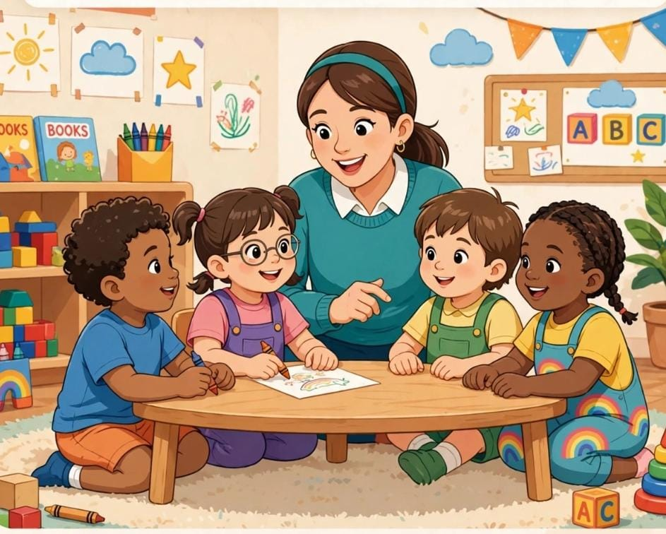
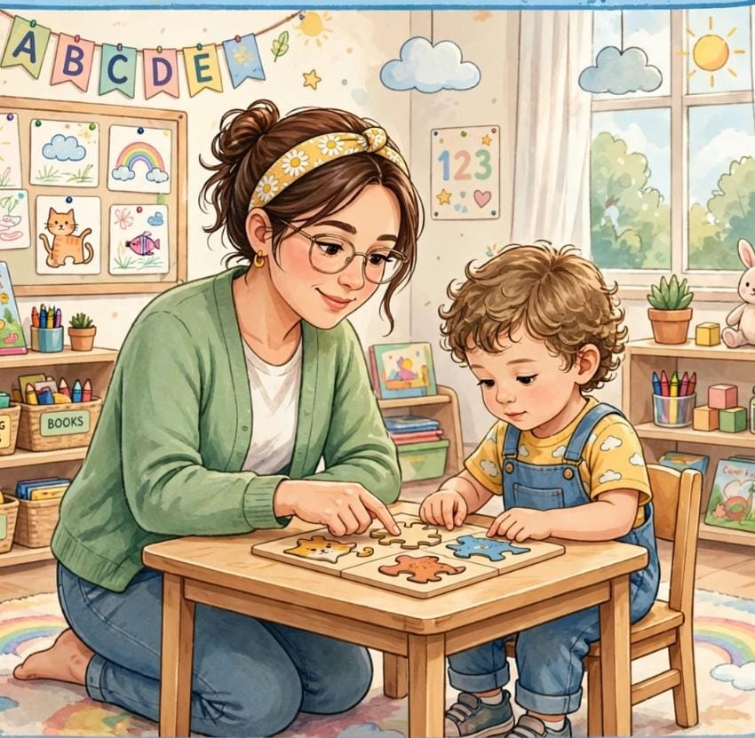

JAYAPRIYA.J
Student
Welcome to my personal portfolio
About Me
Hello! I’m Jayapriya, a simple and creative person who enjoys learning new things and exploring new experiences. I believe in growing step by step and always trying to become a better version of myself. I completed my higher secondary education and Montessori teacher training. I’m someone who enjoys being creative, learning from new experiences, and spending time doing the things I love. In my free time, I enjoy dancing and listening to music. These are the things that make me happy and help me stay positive. ✨ .
My Skills

Classroom Management
I can create a positive, organized and comfortable classroom environment where children feel safe and interested in learning.

Creative & Active Learning
I enjoy using creative activities, games and practical methods to make learning interesting and engaging.

Teaching Skills
I can explain ideas in a simple and understandable way and help children learn through activities and practice.

Communication
I can communicate clearly and build friendly and comfortable relationships with children and others.

Patience
I understand that every child learns differently, so I stay calm and give them the time and support they need.

Art & Craft
I enjoy drawing, colouring, paper crafts and other creative activities that encourage children's imagination.
Education
Higher Secondary Education
Humanities
Montessori Teacher Training
Montessori TTC
AI Python Full Stack
Currently Learning
Contact
📧 mekalyani2020@gmail.com
📍 Thrissur, Kerala